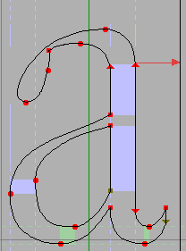
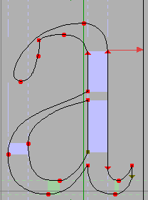
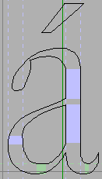
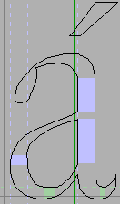

Building Accented and other Composite Glyphs¶
You can use the command to build up accented glyphs. Or you can use and build slightly more general composite glyphs (ligatures and so forth). The accented version will not create ligatures and will not replace Alpha with A. The composite version will do both these things. My assumption is that ligatures (like the “fi” ligature) usually need a bit of work on the user’s part to get them to look good, in the case of “fi” the dot on the “i” needs to be fused into the hook of the “f”, and if you are careless with the command you might destroy your work inadvertently.
What can be built?
Unicode specifies various normative glyph decompositions. So “Aacute” is defined to be an “A” with an “acute” accent centered on top. Any of these can be built (though if the glyph contains no accents it will need to be built with the build composite command).
Sometimes Unicode’s normative definition is not as informative as it might be (many of the greek accents are “unified” with latin accents that they don’t really look like, the result is that following Unicode slavishly will yield the wrong glyph). So in some cases FontForge will use a slightly different set of glyphs than the normative decomposition.
This includes:
Latin accented characters
Latin ligatures (ae, oe, fi, fl, etc)
Greek accented characters
Cyrillic accented characters
Hebrew ligatures
Arabic ligatures
Fractions, digits inside parens, roman numerals, etc.
The predefined Hangul characters (0xac00-0xdfaf)
Many of the Korean Jamo are actually ligatures of other Jamo (ssangkiyoeok (0x1101) is composed of two kiyoeok (0x1100)). For some reason this information is not normative unicode, but FontForge is aware of it anyway and will build those glyphs if you ask it to.
The glyphs “i” and “j” can be built by adding a dot accent to the dotlessi and dotlessj glyphs
The dotlessi and dotlessj glyphs can be built by removing the dot from an “i” or “j” glyph
If a glyph name has an extension, as “agrave.sc”, then it will be built out of the same components as “agrave”, except FontForge will use the variants of those components named with the same extension. So “agrave.sc” would be built out of “a.sc” and “grave.sc”. If the accent variant does not exist then FontForge will also try the bare accent “grave”.
FontForge knows a few other things. It knows that Greek “Alpha” and Cyrillic A both look like the Latin “A” and will replace either if you ask. (as well as all the other similar glyphs in latin, greek, cyrillic, cherokee, etc.)
Some glyphs are just extremely simple to build. There are a whole slew of glyphs which correspond to zero-width spaces. FontForge will build any of them. More usefully it will build any of the fixed size spaces 0x2000-0x200f, and the fixed sized rules 0x2010-0x2015).
You may use the dialog to define a ligature yourself, and FontForge will build it for you.
In Adobe’s CID glyph sets there are some pre-rotated versions of latin glyphs. When CJK text is written vertically the convention is that any text in western alphabets should be displayed rotated 90º clockwise. If you apply Build Accented Glyph to one of these slots it will find the appropriate latin letter and rotate it properly.
If a glyph’s name is “vertcid_<cid>” where <cid> is a decimal number, then it is assumed to be a vertically rotated version of the glyph at <cid>. In non-cid-keyed fonts, if a glyph’s name is “vertuni<uni>” where <uni> is a four digit hex number, then it is assumed to be a vertically rotated version of that unicode glyph.
So for each selected glyph in the font view (or for the current glyph in the outline view), and if all the base glyphs and accents needed by the glyph have already been created then this command will delete anything that is in the current layerand put a reference to the base glyph and another reference to the accent glyph into the foreground. So if the current glyph were “À” then a reference to “A” would be added to it, and a reference to
If Copy From is set to All Fonts then any bitmaps will have a similar process done – that is to say, bitmap references will be created (even in the outline glyph view).
Choosing accents can be a slightly tricky process. Unicode says that accented letters are logically built out of the accents in the range 0x300-0x340, but this does not work too well in postscript. A Type1 font works better if the accented glyph is in the Adobe Standard Encoding, which means either using accents around 0x2d0 or ascii glyphs. FontForge will first attempt to find an accent around 0x2d0, then in ascii and finally in the 0x300-0x340 range. Even worse, Unicode unifies the greek and latin accents, so for greek letters FontForge will look for accents around 0x1fbd (FontForge will also require the presence of the double accents like 0x1fdd).
Some of Adobe’s fonts have accents designed for use over upper case letters (the nomal accents are designed for lower case), and accents designed for use over cyrillic letters. So in such a font, if you attempt to build “Agrave” FontForge will build it out of “A” and “Grave” (or “grave.cap”, not the standard “grave”).
Not all accents should be centered above the base glyph, a cedilla is (usually) centered underneath the base, while other accents need to be placed to the left or right, or even overstruck. FontForge should know about proper placement of most accents (or at least a rough approximation thereto).
Some Unicode glyphs contain more than one accent. Additional accents will be treated similarly. This command can also be used to generate more general composite glyphs .
Some accents (for example cedilla) are treated unexpectedly on certain letters (different ways in different languages), so be careful of g-cedilla. Å often merges the ring into the top of the A, but here it will float above it. Be alert.
Placing an accent above a glyph is surprisingly tricky. Centered accents (like grave, acute, etc.) should not really be placed in the exact center of the glyph. For instance when placing an acute accent on top of an “a” the accent should actually go above the highest part of the “a” which is almost but not quite in the center of the glyph. And when placing an acute on top of a “k” (a rare combination, but still used) the accent is centered on the stem of the “k”. Greek accents are even more baroque. FontForge knows many oddities of accent placement, but it will never know all of them (some letters have multiple forms depending on the font, or perhaps on the humidity and phase of the moon).

Center point of the glyph |

Highest point of the glyph |
And how accents are centered depends on the accents themselves. Usually FontForge will try to center an accent so that the accent’s center is over the base glyph’s “center”. But that doesn’t always work either. The grave and acute accents are usually (but not always) centered only on the bottom part of the glyph.

Midpoint of accent |

Centered on base of accent |
FontForge gives you a minuscule amount of control over where it puts accents. There are two preference items you can set (File->Preferences)
AccentOffsetPercent – This allows you to control the amount of space between the top of the letter and the bottom of the accent (or the bottom of the letter and the top of the accent for accents that sink under their letters). This is expressed as a percentage of the em size and defaults to 6%. (In some cases there will be a little bit more space above the accent than that. All the accents from all the lower case letters should be at the same height, but the letter “o” is usually slightly higher than the letter “u”. So all the lower case accents will be placed at the appropriate height for “o”, even those over “u”. A similar trick is done for upper case letters).
AcuteCenterBottom – This controls whether acute and grave (and double acute and grave) accents are centered on the entire glyph, or just on the bottom.
Note
So FontForge is going to do something wrong. There are just too many areas where I am ignorant or my taste doesn’t match yours or the program has a bug. I strongly recommend that you examine all your accented glyphs after building them and be prepared to adjust things.
The algorithms take some account of the italicangle, but when working on an italic (or oblique) font FontForge is even more likely to do something you don’t like.
If all else fails you can build your own accented glyphs with Edit->Copy Reference and Edit->Paste